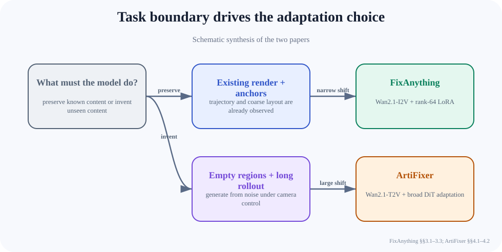
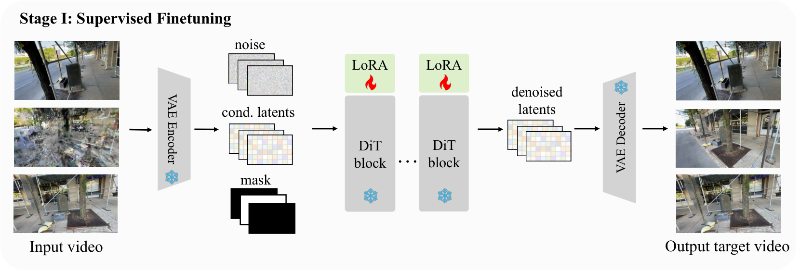
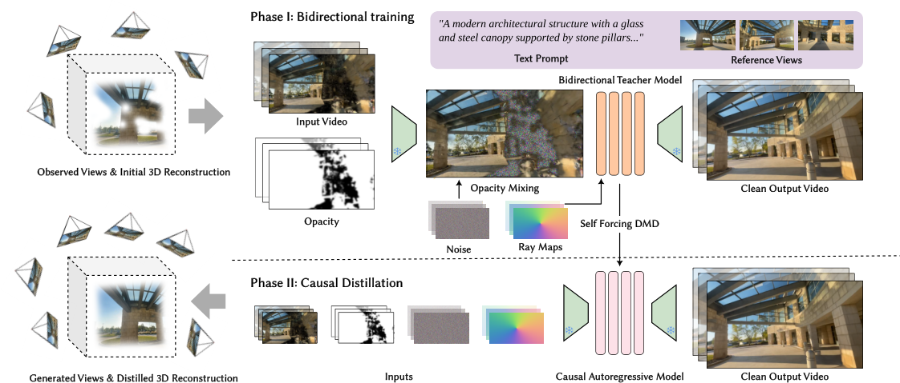
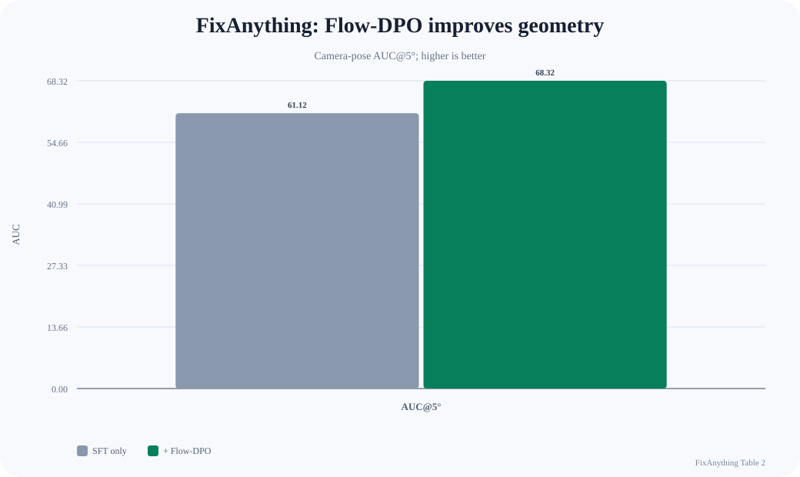
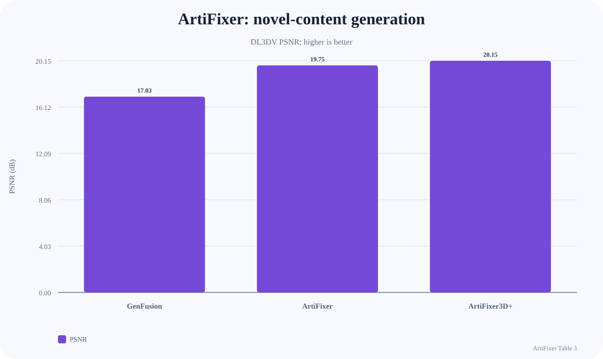

核心结论
关键证据
共同问题与真正的决策轴
两篇都用视频生成先验改善稀疏 3D 渲染，但它们优化的不是同一个任务。
FixAnything 接收一整段由 NeRF、3DGS、mesh 或稀疏点云渲染的视频，要求保持原场景内容与相机运动，只清理偏离自然视频流形的 artifact。ArtiFixer 则进一步要求在完全没有渲染内容的区域生成新场景、精确服从相机射线，并把双向教师蒸馏成可生成任意长序列的 causal model。
因此，骨干选择对应的是 preservation vs invention，参数更新范围对应的是 窄条件适配 vs 表征与生成动力学重构。
| 维度 | FixAnything | ArtiFixer |
|---|---|---|
| 目标 | 修复已有渲染 | 修复 + 补全完全未观测区域 |
| 输入结构 | 始终有渲染轨迹与 clean anchors | RGB/opacity 可完全为空 |
| 相机信息 | 渲染视频隐式携带轨迹 | Plücker ray 显式控制 |
| 长序列 | 61 帧重叠 chunk | causal autoregressive rollout |
| 主优先级 | 保真与低成本 | 生成能力、控制与可扩展性 |

两套系统框架：一个做轻量清理，一个重构生成管线
原始框架图直接揭示了两篇工作的结构改动幅度。
FixAnything 的主干保持冻结，只在 Wan2.1-I2V 的 DiT block 上训练 LoRA；渲染 latent 和 trust/fix mask 直接进入原生条件接口。ArtiFixer 则先训练带 opacity mixing、ray map 和 reference cross-attention 的双向 teacher，再将其蒸馏为 causal autoregressive model，并可把输出重新蒸馏回 3D 表示。
论文原始方法总览
左：FixAnything 的 SFT 阶段；右：ArtiFixer 的双阶段训练与因果蒸馏。点击查看原分辨率。


FixAnything：为什么是 I2V + LoRA
它把问题刻意收窄为“学习如何使用 degraded input”，而不是重新学习视频生成。
方法把 noisy target latent、degraded-video latent 和 trust/fix mask 按通道拼接，同时保持 Wan 架构不变。这与 I2V 原生的视觉 latent + mask 条件接口高度一致；从设计上看，I2V 为沿已知内容传播外观和身份提供了更合适的归纳偏置。
渲染本身已经暴露 camera trajectory 与 coarse layout，可信训练帧提供外观、光照和结构锚点，所以模型不必学习 SE(3)/Plücker 相机坐标。论文明确说明 rank-64 LoRA 已足够，因为任务仅需学习条件化清理，而非从零生成。
- 20 对训练视频即有 16.70 dB PSNR，100 对达 17.45，500 对为 17.65，说明大部分能力来自预训练 prior。
- 去掉 trust/fix mask，PSNR 从 17.65 降到 16.37，并会修改原本正确的内容。
- 普通 SFT 仍可能产生跨视角 hallucination；只继续优化 LoRA 的 Flow-DPO 就把 AUC@5° 从 61.12 提到 68.32。
设计推断
ArtiFixer：为什么是 T2V + 大范围微调
它需要保留标准 noise-to-video 能力，同时把多参考图、opacity 和相机射线整合进每一层 DiT。
训练会随机把最后 K 帧的 RGB 与 opacity 置零，只保留 Plücker ray，让模型依靠文本、0–12 张参考图与相机条件重建。这要求 backbone 能从噪声创造未知内容，而不仅是沿第一帧延展。作者从 T2V checkpoint 出发，再按需加入类似 Wan I2V 的 reference cross-attention。
微调范围大的原因不是模型参数量本身，而是变更跨越整套表征：每个 block 新增 opacity/ray 注入与参考图 K/V，flow 的 source distribution 改为 degraded latent 与 Gaussian noise 的 opacity mixing，第二阶段又切换 block-causal attention、KV cache、自回归 rollout 与 DMD few-step distillation。
- 冻结 VAE 与 text encoder，微调其余组件；新增通路零初始化，以保留预训练起点。
- 仅保留文本条件时，生成质量仍接近 base Wan2.1，表明全参适配没有明显抹掉 T2V prior。
- 文本不是主要指标来源：最稀疏 3-view 设置仅带来 +0.14 dB，T2V 更关键的价值是未知区域的生成分布。
- 1.3B 版本仍接近或超过更大基线，说明效果并非只靠 14B 容量。
成本换能力
实验信号：轻量偏好优化与大范围生成分别解决什么
两张重绘图只比较各自论文内部的设置，避免跨论文协议误用。
FixAnything 的 Flow-DPO 主要提升几何一致性，图像指标只小幅变化；ArtiFixer 的 novel-content split 则显示其完全未观测区域生成能力。两者的数值不可直接横向比较。
| 方案 | 主要收益 | 主要代价/边界 |
|---|---|---|
| I2V + LoRA | 保真、数据高效、单卡训练、易迁移 | 依赖已有渲染与 anchors；不以空白区域生成见长 |
| T2V + 大范围微调 | 从噪声补全、显式相机控制、causal 长序列 | 训练成本高、系统复杂、分辨率与推理速度受限 |
各自论文内部的关键结果
左图来自 FixAnything Table 2；右图来自 ArtiFixer Table 3。


局限与开放问题
- 两篇的评测协议和系统组成不同，跨论文 PSNR 不能作为严格 head-to-head 结论。
- FixAnything 的 LoRA 是否达到 full-finetune 上限没有被直接验证。
- ArtiFixer 是否能用 LoRA 达到相同性能也没有被直接验证。
证据与推断边界
- 论文事实：backbone、冻结/可训练范围、训练规模、消融表与指标。
- 强设计推断：I2V/T2V 选择分别服务于 preservation 与 invention 的任务偏置。
- 不能下的因果结论：ArtiFixer 的指标优势不能单独归因于 T2V 或全参微调。
来源与版本
论文原始框架图来自 arXiv HTML；决策图与结果图为带来源标注的重绘。指标对应当时读取的 arXiv 版本。
- FixAnything PDF — arXiv:2608.23549
- FixAnything §3.2–3.3 — backbone、conditioning 与 LoRA
- FixAnything §4.3–4.4 — Flow-DPO 与数据/掩码消融
- ArtiFixer PDF — arXiv:2603.00492
- ArtiFixer §4.1–4.2 — 双向训练、opacity mixing 与 causal distillation
- ArtiFixer §5.4 — 条件、规模和速度诊断